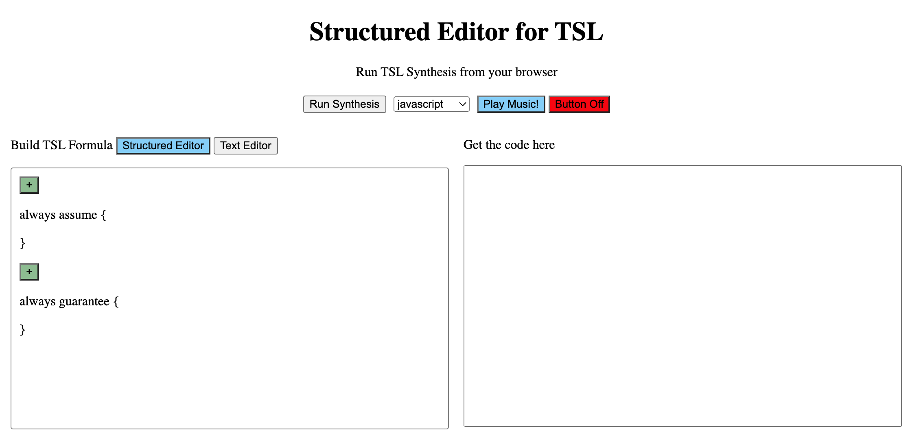

Projects & Research

RESEARCH
Conducting novel research in reactive program synthesis for temporal logic @ Barnard College's Programming Languages Lab.

ART
House plant series: Drawn with India Ink and brush on ink block.